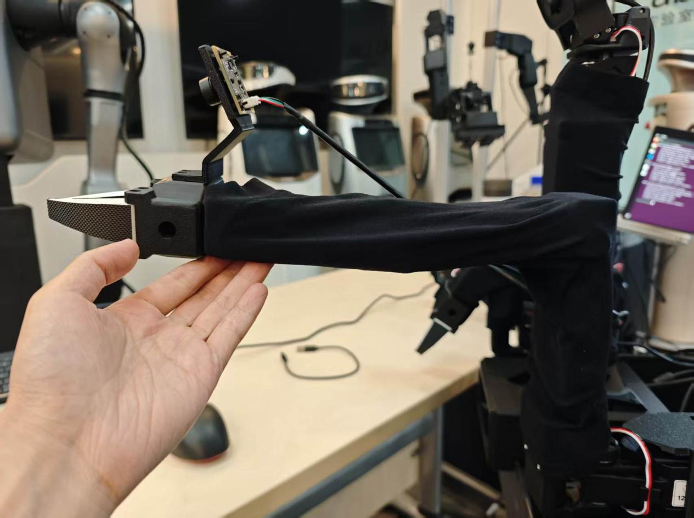
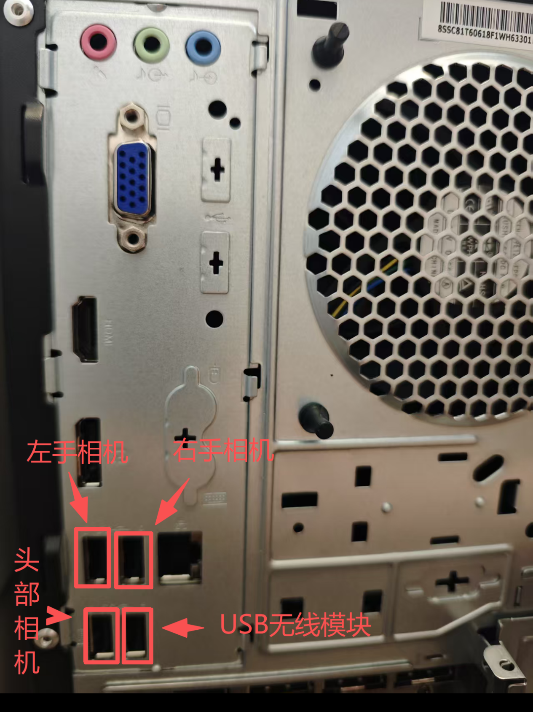
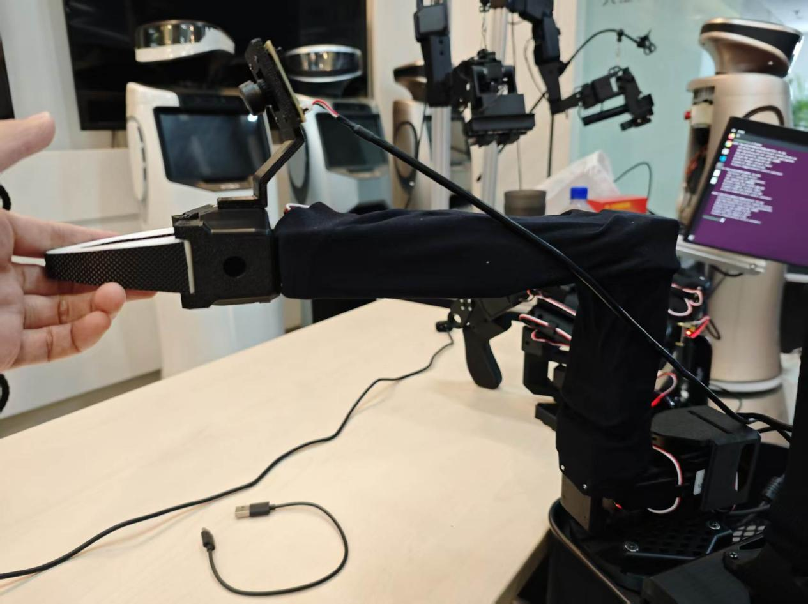
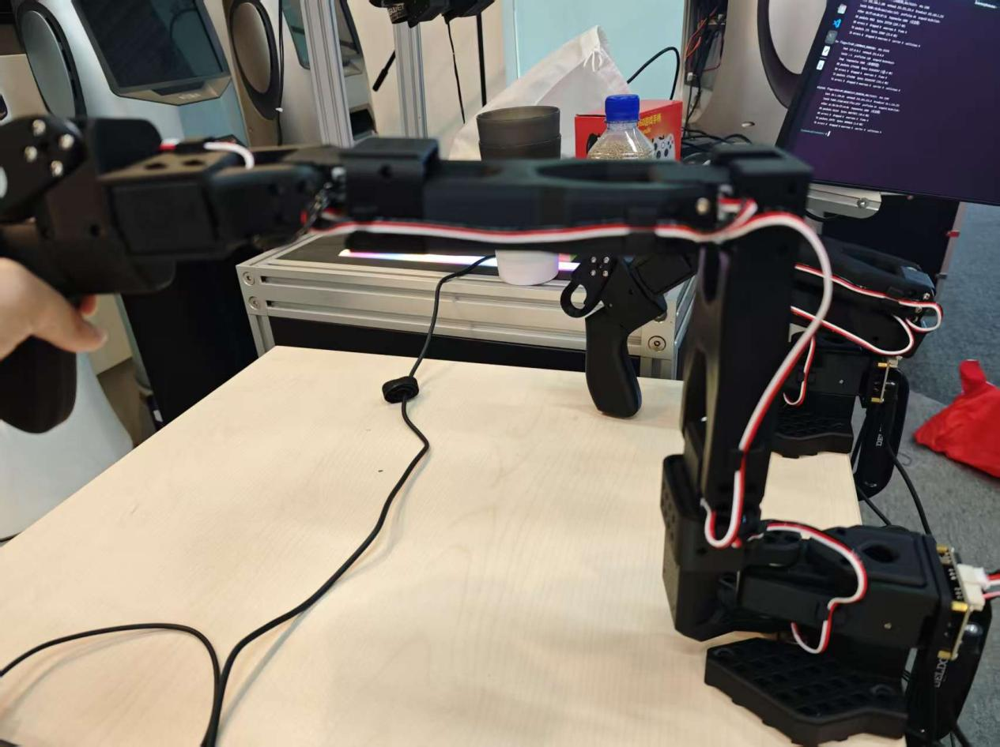
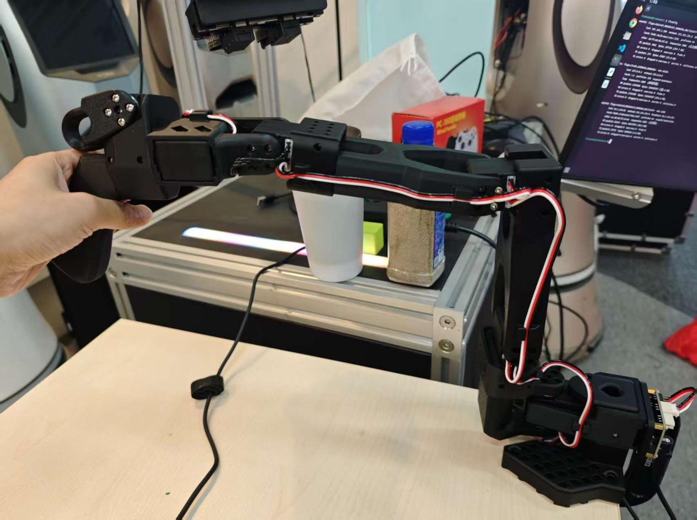

摄像头配置与主从臂校准
端到端的"感知端"和"执行端"要能互通语言，靠的都是标定：三路摄像头锁定插口别名，让画面永远知道自己来自哪个位置；四条臂逐一执行 lerobot-calibrate，录下 2047 中位基准与全行程 MIN/POS/MAX，把手感差异抹平。本课配 3 段校准讲解视频，做完后你的主从臂才能"指哪打哪"。
00课程节奏：五星学习法 · 8 段微课（每段 ≤ 15 min）
本实验按五星学习法组织：先用两个真实故障聚焦问题（摄像头换口致 cam_* 丢失、校准值偏差致遥操作动作变形），再激活旧知（EXP-01 udev 别名 + EXP-02 串口 + 编码器 0~4095），接着示证新知（硬件材料 + 坐标对应标定动画），然后动手应用新知锁摄像头口、校四条臂，最后借偏差判读与排障融会贯通。全程切成 8 段微课、每段不超过 15 分钟，段间停顿 1~2 分钟消化；纯讲授合计约 100 分钟，其余课时用于动手实操校准与个别辅导。
| 课段 | 五星阶段 | 时长 | 对应章节 | 本段任务 |
|---|---|---|---|---|
| 课段 1 | 聚焦问题 | 12 min | §01 + §02 前半 | 抛出"摄像头换口致 cam_* 丢失"与"校准偏差致遥操作动作变形"两个现场故障 |
| 课段 2 | 激活旧知 | 8 min | §02 后半 | EXP-01 udev 别名·EXP-02 串口插拔·编码器 0~4095 三条旧知衔接 |
| 课段 3 | 示证新知 | 15 min | §03 | 对照实物清单确认三摄像头、四臂别名、校准 JSON 路径 |
| 课段 4 | 示证新知 | 12 min | §06 | 坐标对应标定动画，理解 POS 中位 + MIN/MAX 录程 + JSON 落盘 |
| 课段 5 | 应用新知 | 15 min | §04 步骤1~3 + §05 ① | 三摄像头直连 + find-cameras + 写 udev 规则三条 cam_* 别名 |
| 课段 6 | 应用新知 | 15 min | §04 步骤4~6 + §05 ② | 四条臂两阶段校准（基准→录程），异常输 c 重校 |
| 课段 7 | 应用新知 | 10 min | §07 | 标定偏差滑杆判读自测，全对方可进入下一实验 |
| 课段 8 | 融会贯通 | 13 min | §08~§10 | 排障口诀收口，挑战题与思考题拔高迁移 |
讲课提示：课段 1/2 以讲授 + 提问为主；课段 3~4 用实物 + 动画；课段 5~6 边看视频边动手（校准视频后暂停让学员试掰臂）；课段 7 学员独立完成；课段 8 答疑拔高。段间停顿 1~2 分钟。
01学习目标课段 1 · 聚焦问题 · 12 min
- 能按第 04 章完成三摄像头接入：直连不走拓展坞，用抓拍图分辨哪路是左/右/头
- 能读懂
lerobot-find-cameras opencv输出并核对 /dev/cam_left·right·head 三个别名 - 理解校准的两阶段流程：2047 中位基准姿态 → 全行程录 MIN/POS/MAX
- 能独立校准四条臂（左/右从臂用 --robot，左/右主臂用 --teleop），参数不串
- 能查 JSON 校准文件，并判断"细微差异正常、较大差异必须重校"与输 'c' 重校的方法
02原理讲解：标定就是"主从对表"课段 1 收尾 + 课段 2 · 激活旧知 · 8 min
标定（calibration）好比两块对表：主厨（主臂）和帮厨（从臂）各自站位不同、手长短有微差，开做前两人把"中在哪、两端到哪"对一遍，之后才谈得上跟随。电机角度没有出厂绝对刻度——它只知道"编码器读数 0~4095"，哪个读数是中位、哪个是物理极限，只能靠你亲手掰一遍录下来：
摄像头侧的"标定"则是身份绑定：video0/3/5 是插拔顺序给的临时名，第 04 章要求摄像头直连、不可用拓展坞、不可变动插口——只有插口固定，ID_PATH 才稳定，udev 才能把"端口 7"永久翻译成 /dev/cam_left。至此感知端（cam_*）与执行端（arm_*）都有了稳定坐标，遥操作才有意义。
ATTRS{serial} 匹配臂、用 ENV{ID_PATH} 匹配摄像头；② EXP-02 的"先电源后 USB"插拔顺序；③ 电机编码器读数范围 0~4095，中位约 2047。本课把这些从装配层落到标定层——你亲手把 0~4095 翻译成"中在哪、两端到哪"，落盘成 JSON。▍实物对照：校准手法与摄像头端口分配


▍命令与日志输出（摘自 05-LZ-XL01主从臂校准）
先按《03-LZ-XL01机械臂串口》拿到四条臂的稳定串口别名，再按下述命令逐一校准。⚠️ 下以 左从臂 为例展开日志，其余三条臂仅 --port 与 --id 不同。
① 环境与权限（每次校准前先执行）
# 四条臂的稳定串口（见 03-LZ-XL01机械臂串口） /dev/arm_slave_left # 从臂左 /dev/arm_slave_right # 从臂右 /dev/arm_master_left # 主臂左 /dev/arm_master_right # 主臂右 # 进入环境并放开权限（每终端执行一次） conda activate lerobot sudo chmod 666 /dev/arm_*
② 左从臂校准（so101_follower）
lerobot-calibrate \ --robot.type=so101_follower \ --robot.port=/dev/arm_slave_left \ --robot.id=left_follower_arm
执行后先出现连接日志，提示将机械臂移动至基准姿态后按回车；第二步把各关节缓缓掰到最大最小，再回车即写入 MIN/POS/MAX：
INFO ... calibrate.py:74 {'robot': {'calibration_dir': None, 'id': 'left_follower_arm',
'port': '/dev/arm_slave_left', 'use_degrees': False}, 'teleop': None}
INFO ... follower.py:104 left_follower_arm SO101Follower connected.
INFO ... follower.py:121 Running calibration of left_follower_arm SO101Follower
Move left_follower_arm SO101Follower to the middle of its range of motion and press ENTER....
Move all joints sequentially through their entire ranges of motion.
Recording positions. Press ENTER to stop...
-------------------------------------------
NAME | MIN | POS | MAX
shoulder_pan | 859 | 1982 | 2740
shoulder_lift | 850 | 864 | 3189
elbow_flex | 947 | 3141 | 3142
wrist_flex | 940 | 2955 | 3216
wrist_roll | 1142 | 1987 | 2763
gripper | 2046 | 2082 | 3264
其中 2047 为电机位置中间值（未校准被自动置中时全为 2047）。每次校准数值有细小波动属正常；若出现较大数值差异，说明校准有问题，需重新执行。
③ 右从臂 / 主臂校准（仅换 --port 与 --id）
# 右从臂：follower -> --port=/dev/arm_slave_right --id=right_follower_arm lerobot-calibrate \ --robot.type=so101_follower \ --robot.port=/dev/arm_slave_right \ --robot.id=right_follower_arm # 左主臂：leader -> --teleop.type=so101_leader --teleop.port --teleop.id lerobot-calibrate \ --teleop.type=so101_leader \ --teleop.port=/dev/arm_master_left \ --teleop.id=left_leader_arm # 右主臂：--teleop.port=/dev/arm_master_right --teleop.id=right_leader_arm lerobot-calibrate \ --teleop.type=so101_leader \ --teleop.port=/dev/arm_master_right \ --teleop.id=right_leader_arm
主臂用 --teleop.type/--teleop.port/--teleop.id（leader），从臂用 --robot.type/--robot.port/--robot.id（follower）——参数前缀和类型不能串。主臂连接日志会打 left_leader_arm SO101Leader connected.，日志内 --calibrate/`--partial rotate 参数表同上。
④ 校准数据异常：输 c 重新校准
连接后若出现"use existing calibration file or type 'c' to rerun"}，输入大小写 lerobot-calibrate ... 同上命令 INFO ... Press ENTER to use provided calibration file ... or type 'c' and press ENTER to run calibration: c
输入 c 回车后进入正常校准流程（先摆基准回车、再掰全程回车）。
⑤ 校准数据查看（JSON）
主臂校准文件： /home/lz-xl01/.cache/huggingface/lerobot/calibration/teleoperators/so101_leader/ left_leader_arm.json right_leader_arm.json 从臂校准文件： /home/lz-xl01/.cache/huggingface/lerobot/calibration/teleoperators/so101_leader/ left_follower_arm.json right_follower_arm.json 示例 right_leader_arm.json： { "shoulder_pan" : { "id": 1, "drive_mode": 0, "homing_offset": -1499, "range_min": 972, "range_max": 3363 }, "shoulder_lift": { "id": 2, "drive_mode": 0, "homing_offset": 1569, "range_min": 818, "range_max": 3192 }, "elbow_flex" : { "id": 3, "drive_mode": 0, "homing_offset": -1817, "range_min": 827, "range_max": 3033 }, "wrist_flex" : { "id": 4, "drive_mode": 0, "homing_offset": -881, "range_min": 1028, "range_max": 3350 }, "wrist_roll" : { "id": 5, "drive_mode": 0, "homing_offset": -218, "range_min": 1100, "range_max": 3183 }, "gripper" : { "id": 6, "drive_mode": 0, "homing_offset": -1946, "range_min": 1999, "range_max": 3265 } }
03硬件与材料课段 3 · 示证新知 · 15 min
| 对象 | 数量 | 本课要求 |
|---|---|---|
| USB 摄像头（左/右/头） | 3 | 插主机背面指定端口（7 / 6 / 1），直连不可用拓展坞，插后不再变动 |
| 从臂（follower） | 2 | /dev/arm_slave_left·right，so101_follower 校准 |
| 主臂（leader） | 2 | /dev/arm_master_left·right，so101_leader 校准 |
| 终端与权限 | — | conda activate lerobot；sudo chmod 666 /dev/arm_* 后再校准 |
| 参考视频 | 3 段 | 主臂校准讲解版 / 从臂校准讲解版 / 从臂校准日志版 |
lerobot-find-cameras opencv 输出三路：Camera #0 → /dev/video0（左手）、#1 → /dev/video3（右手）、#2 → /dev/video5（头部），格式 YUYV 640×480@30。打开 outputs/captured_images 看三张抓拍图即可分辨位置。▍实物对照：摄像头端口分配与校准现场

04步骤实践：先锁摄像头，再校四条臂课段 5~6 · 应用新知 · 2×15 min
① 主臂校准讲解版
主臂（leader）两阶段校准全程讲解：基准姿态怎么摆、行程怎么掰、日志怎么看。
② 从臂校准讲解版
从臂（follower）校准讲解：--robot.* 参数、中位 2047 确认与逐关节录程手法。
③ 从臂校准日志版
逐行对照校准日志：connected → 中位提示 → Recording positions → MIN/POS/MAX 表。


05关键命令：calibrate 四臂与重校随课段 5 / 6 对照使用
# ① 摄像头搜索与分辨（第 04 章） conda activate lerobot rm -rf /home/lz-xl01/lerobot-0.4.1/outputs/captured_images lerobot-find-cameras opencv # Camera #0 → /dev/video0 · #1 → /dev/video3 · #2 → /dev/video5（YUYV 640×480@30） udevadm info --query=all --name=/dev/video0 # 查 ID_PATH，核对 cam_head 等别名 # ② 从臂校准（第 05 章 2）——左右各一次，只换 port/id sudo chmod 666 /dev/arm_* lerobot-calibrate \ --robot.type=so101_follower \ --robot.port=/dev/arm_slave_left \ --robot.id=left_follower_arm # 右从臂：--robot.port=/dev/arm_slave_right --robot.id=right_follower_arm # ③ 主臂校准（第 05 章 3）——注意用 --teleop.* 参数 lerobot-calibrate \ --teleop.type=so101_leader \ --teleop.port=/dev/arm_master_left \ --teleop.id=left_leader_arm # 右主臂：--teleop.port=/dev/arm_master_right --teleop.id=right_leader_arm # ④ 两阶段交互：摆基准回车 → 逐关节掰全程 → 回车出表 Move … to the middle of its range of motion and press ENTER.... Move all joints sequentially through their entire ranges of motion. Recording positions. Press ENTER to stop... NAME | MIN | POS | MAX ← 初始全 2047（电机位置中间值），录完如 859|1982|2740 # ⑤ 重新校准：提示处输 c 回车（直接回车=沿用旧文件） Press ENTER to use provided calibration file associated with the id … or type 'c' and press ENTER to run calibration: # ⑥ 校准数据位置（第 05 章 5） # 主臂 …/calibration/teleoperators/so101_leader/*.json # 从臂 …/calibration/robots/so101_follower/*.json # 字段例：{"id":1,"drive_mode":0,"homing_offset":-517,"range_min":854,"range_max":3266}
lerobot-calibrate 后终端会提示："Move … to the middle of its range of motion and press ENTER" → 摆好基准姿态回车 → "Move all joints sequentially through their entire ranges…" → 逐关节掰全程再回车 → 输出 NAME | MIN | POS | MAX 表。若需重校，在提示处输 c 回车（直接回车=沿用旧文件）。06动画讲解：主从臂坐标对应标定课段 4 · 示证新知 · 12 min
下图上半是主臂、下半是从臂：同一个关节在两块"表"上各自录 MIN/POS/MAX，中位对齐后，主臂掰多少、从臂就跟多少：
下面是主从臂 3D 联动模型：拖动滑杆控制主臂（左侧，蓝色）各关节角度，从臂（右侧，琥珀色）会实时跟随——模拟遥操作中 leader-follower 的映射关系：
🖱 拖拽旋转视角 · 滑杆控制主臂 · 从臂自动跟随
模型 3-2｜主臂（蓝）拖动 → 从臂（琥珀）跟随，模拟 SO100 遥操作 leader-follower 映射
07互动练习：标定偏差滑杆判读课段 7 · 应用新知 · 10 min
文档说"每次校准可能会有细微数值变化，如出现较大数值差异，则说明校准有问题"。拖动滑杆设定本次与上次校准的偏差，看判读结果：
08常见问题课段 8 · 融会贯通 · 13 min
- find-cameras 只找到 1~2 个摄像头：有相机走了拓展坞或没插指定端口；回第 04 章"直连 + 按接口插入"重插再来
- 起步表全是 2047 不动：还没进录程阶段——中位回车后要"逐关节掰全程"，再按 ENTER 结束
- 校准提示 PermissionError：先
sudo chmod 666 /dev/arm_*再执行（第 05 章每条命令前都有这行） - 想要重校却直接沿用旧值：提示处必须输 c 回车；直接回车是使用已有校准文件
- 左右臂参数抄混：从臂永远
--robot.*/ so101_follower、主臂永远--teleop.*/ so101_leader，port/id 左右严格对应 - 两次校准数值差异很大：基准姿态没摆到位或行程没掰满——文档明确"出现较大数值差异……重新执行操作"